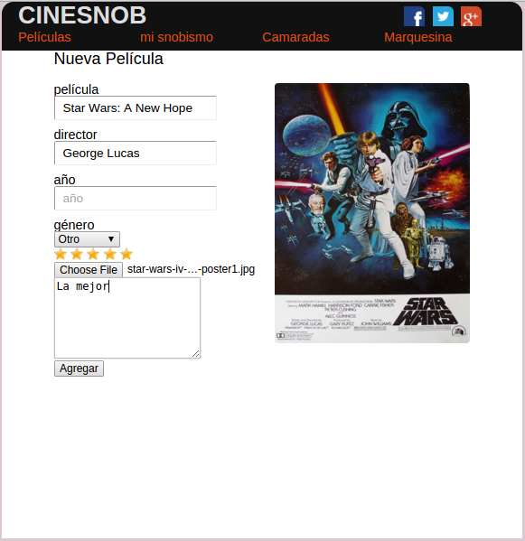
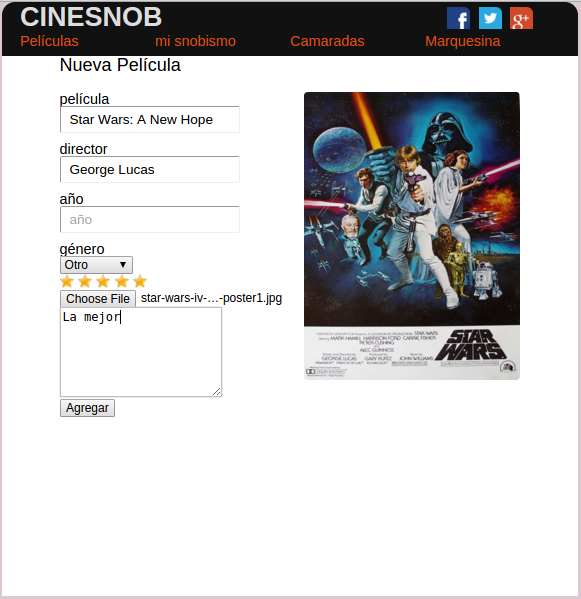

{{ page.title }}
Aplicación web en la que el usuario se registra y puede subir reseñas de película con imágen que puede subir de Google o de sus propias, con calificación y reseña. Además puede ver las películas que otros usuarios han subido, por calificación y por década. Diseño responsivo.
Creada con:
- Django(Python)
- JavaScript y librería jQuery
- HTML y CSS
- Google Search API
- Heroku y AWS
Ver cinesnob en web
ver en Github.com
 
